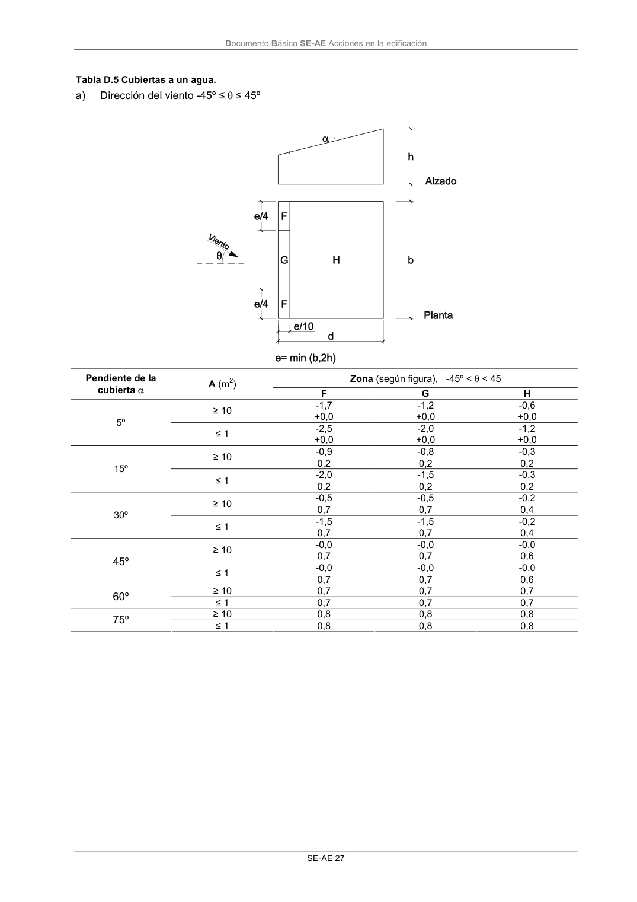

DB-SE-AE · Página 31 · versión 2009-04
SHA256: 26116e5088955f0c6963a6187270cad282e1e7bf5a53a90f695c8fa50b4e4487 · página física 31 de 46 · métodos de encabezado
solo si están cotejados.
Formatos: Markdown · JSON de bloques · PDF p. 31 · imagen PNG
Documento Básico SE-AE Acciones en la edificación SE-AE 27 Tabla D.5 Cubiertas a un agua. a) Dirección del viento -45º ≤ θ ≤ 45º Zona (según figura), -45º < θ < 45 Pendiente de la cubierta α A (m2) F G H -1,7 -1,2 -0,6 ≥ 10 +0,0 +0,0 +0,0 -2,5 -2,0 -1,2 5º ≤ 1 +0,0 +0,0 +0,0 -0,9 -0,8 -0,3 ≥ 10 0,2 0,2 0,2 -2,0 -1,5 -0,3 15º ≤ 1 0,2 0,2 0,2 -0,5 -0,5 -0,2 ≥ 10 0,7 0,7 0,4 -1,5 -1,5 -0,2 30º ≤ 1 0,7 0,7 0,4 -0,0 -0,0 -0,0 ≥ 10 0,7 0,7 0,6 -0,0 -0,0 -0,0 45º ≤ 1 0,7 0,7 0,6 ≥ 10 0,7 0,7 0,7 60º ≤ 1 0,7 0,7 0,7 ≥ 10 0,8 0,8 0,8 75º ≤ 1 0,8 0,8 0,8
